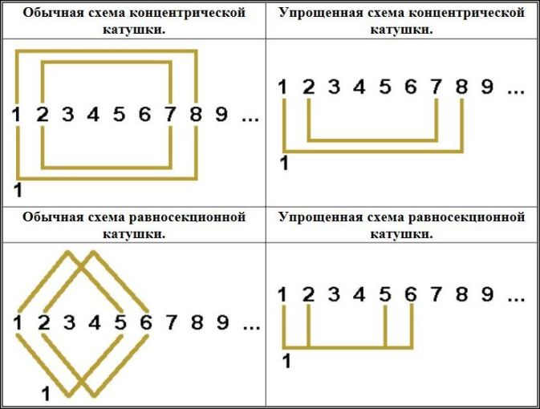
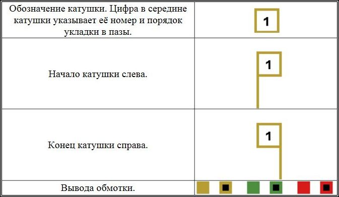
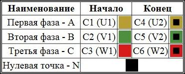
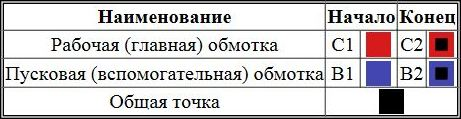

Буквенные обозначения, изображения схем и цветовая маркировка в справочнике обмотчика асинхронных электродвигателей.
Перейти на главную страницу справочника.
Изображения схем укладки обмотки в пазы.
- Каждому обмотчику в работе приходится обращаться к справочникам для нахождения нужной схемы укладки обмотки в пазы асинхронного электродвигателя. Еще чаще приходится самому на листе бумаге рисовать и проверять схему. Естественно для удобного чтения схемы упрощают, и только такие упрощенные схемы будут публиковаться на страницах этого справочника. Цифры от 1 до 9... указывают нумерацию пазов статора, цифра под изображением катушки 1 указывает номер катушки и порядок укладки в пазы статора (ротора).

Изображения схем соединений обмотки.
Буквенные обозначения и цветовая маркировка в схемах справочника.

Обозначение выводов трёхфазных асинхронных электродвигателей.

Обозначение выводов однофазных асинхронных электродвигателей.
